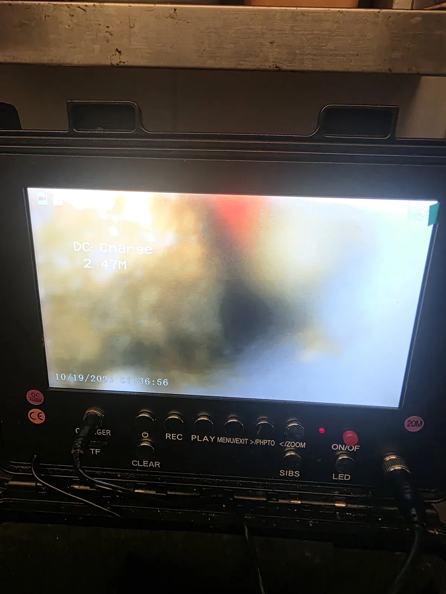
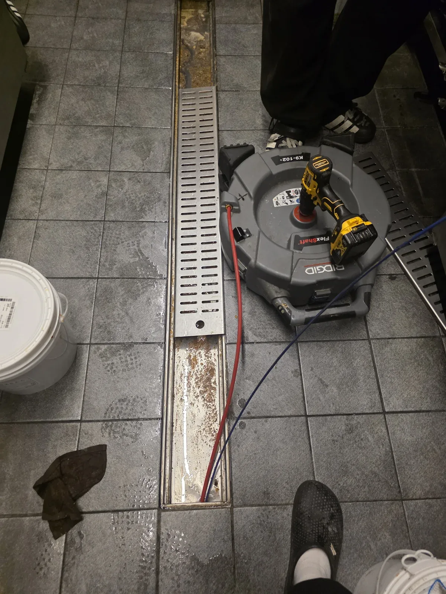

화성시 병점구 병점동, 증상과 점검 기준
식당 하수구막힘 비용은 막힌 구간과 장비 접근 조건, 필요한 반복 작업 범위에 따라 달라집니다. 병점동 현장은 트랜치에서 내시경으로 확인한 뒤 약 2시간 샤프트 작업을 반복하고 정상 통수를 확인한 사례입니다.
경기도 화성시 병점구 병점동 식당에서 배수가 원활하지 않아 진행한 하수구막힘 작업입니다. 이번 하수구막힘 현장은 바닥의 물이 모이는 트랜치를 통해 연결 배관을 점검했습니다. 트랜치는 길게 설치된 배수로를 말하며, 위쪽 덮개와 바닥만 살펴보는 것으로는 연결된 배관 안의 상태를 알기 어렵습니다. 신라건축설비는 내시경으로 내부를 확인한 뒤 작업 방법을 정했습니다.
견적을 확인할 때에는 처음 안내받은 금액이 방문과 점검만을 뜻하는지, 실제 막힌 구간을 처리하는 작업까지 포함하는지 나누어 보시는 것이 좋습니다. 현장 구조를 확인한 뒤 추가 과정이 필요해질 수 있으므로, 작업 시작 전 설명받은 범위와 달라지는 부분은 이유와 금액을 먼저 확인하세요. 배관 상태가 다른 현장을 같은 요금으로 단정할 수는 없습니다. 저렴한 금액 한 줄보다 확인한 원인과 처리 범위, 마지막 배수 시험까지 연결해서 비교하면 어떤 작업을 받는지 이해하기 쉽습니다.
식당 트랜치에서 시작한 작업 범위
화성시 병점구 병점동 식당의 연결 배관에 심한 막힘이 확인됐습니다. 신라건축설비는 바닥 트랜치를 접근 지점으로 삼아 내시경 점검과 샤프트 작업을 진행했습니다.
비용 상담에서는 배수로 표면 청소만 필요한지, 연결 배관 안쪽까지 작업해야 하는지 구분해야 합니다. 이번 사례에는 내부 막힘 확인과 반복 작업, 마지막 통수 테스트가 포함됐습니다.
트랜치에서 배관으로 접근할 위치를 확보하고 샤프트 장비를 준비했습니다. 내시경에서 확인한 구간을 대상으로 장비를 넣어 물길을 가로막은 부분을 처리했습니다. 이번 하수구막힘 작업에서 샤프트를 사용한 목적은 연결 배관 안쪽을 작업해 물이 지나갈 통로를 확보하는 것이었습니다. 바닥 배수로만 정리하는 것으로 끝내지 않고 막힘이 확인된 배관 내부까지 작업을 이어갔습니다.
이번 하수구막힘 현장에서는 약 2시간 동안 샤프트 작업을 반복했습니다. 심하게 막힌 상태였기 때문에 한 차례 장비를 넣는 것으로 마무리하지 않고, 배수가 가능하도록 반복 작업을 진행했습니다. 작업 시간이 길어졌다는 설명보다 중요한 것은 그 시간 동안 어떤 문제를 처리했는지입니다. 병점동 식당에서는 트랜치를 작업 지점으로 삼아 연결된 배관의 통로를 확보하는 데 집중했습니다.

약 2시간이라는 기록을 비용으로 바로 환산할 수 있나요?
약 2시간은 이 현장에서 샤프트 작업을 반복한 기록입니다. 모든 식당이 같은 시간에 끝나거나 같은 금액으로 처리되는 기준은 아닙니다. 배관 접근성과 하수구막힘 상태가 다르면 작업 범위도 달라집니다.
견적 문의 시 시간당 계산인지, 정해진 작업 범위의 금액인지 확인하세요. 작업이 길어지거나 추가 장비가 필요할 때의 조건도 함께 물어보면 좋습니다. 이번 사례에는 해당 현장의 실제 청구액이나 임의의 최저가를 제시하지 않았습니다.
샤프트 반복 작업을 마친 뒤에는 물을 흘려 통수 테스트를 진행했습니다. 배관에 장비가 들어갔다는 것만으로 하수구막힘이 해결됐다고 볼 수는 없으므로, 실제 물이 내려가는 상태를 확인하는 단계가 필요했습니다. 트랜치에서 시작한 작업이 배수 개선으로 이어졌는지 살피고 정상적으로 물이 내려가는 것을 확인했습니다.

작업 결과와 사용·상담 안내
물 사용을 멈출 수 있는 시간, 트랜치 주변의 접근 공간, 장비 반입과 주차 조건을 알려주세요. 식당은 영업 준비와 조리 동선이 있어 일정 조율이 작업 계획에 영향을 줄 수 있습니다.
야간·휴일 작업이나 별도 장비 비용이 있는지는 출동 전에 확인할 항목입니다. 기존 현장의 실제 적용 여부를 추정하기보다 지금 문의하는 현장의 조건을 기준으로 상담하세요.
병점동 현장은 샤프트 반복 작업 이후 물을 다시 흘려 정상적으로 내려가는지 확인했습니다. 비용을 비교할 때도 작업 후 배수 확인이 포함되는지 함께 확인하세요.
기본 작업, 추가 작업, 부가세와 사후관리 범위를 같은 기준으로 비교하면 됩니다. 식당의 위치와 증상을 전달해 상담한 뒤, 현장 확인을 거쳐 필요한 범위를 결정하는 순서가 적절합니다.
병점동 식당 하수구막힘은 트랜치에서 약 2시간 샤프트 작업을 반복한 뒤 정상 통수를 확인한 사례입니다. 배수가 회복된 이후에는 바닥 배수로에 모이는 음식물과 이물질을 따로 수거하는 관리가 도움이 됩니다. 덮개 주변에 쌓인 찌꺼기를 물로 밀어 넣기보다 건져내고, 배수로 안에 남아 있는 내용물도 눈에 보이는 범위에서 정리해 주세요.
약 2시간은 병점동 해당 현장의 반복 작업 기록입니다. 다른 현장의 소요 시간은 하수구막힘 상태와 작업 조건을 확인해야 합니다.
확인된 작업은 내시경과 샤프트 작업입니다. 사용할 장비는 배관 접근 조건과 막힌 구간의 상태에 맞춰 판단해야 합니다.
하수구가 막혔을 때는 물 사용을 줄이고 물이 고이는 위치와 발생 상황을 알려주세요. 하수구 뚫는 업체에 점검과 작업 후 확인 범위를 함께 문의하시면 상담에 도움이 됩니다.
최종 조치: 하수구막힘 조치 완료: 식당 트랜치에서 약 2시간 샤프트 반복 작업 후 정상 통수 확인
현장 방문 전 확인하는 비용과 작업 범위
신라건축설비는 현장 증상과 배관 구조를 확인한 뒤 필요한 작업과 예상 비용을 안내합니다. 단순 관통으로 해결되는지, 배관내시경·석션·고압세척 또는 추가 장비가 필요한지는 현장 상태에 따라 달라집니다. 출장비와 야간 작업비, 추가 장비 비용이 발생할 수 있는 경우 작업 전에 먼저 설명하고 동의를 받은 범위에서 진행합니다.
업체를 선택할 때 확인할 사항
무조건적인 ‘0원’ 표현보다 실제 작업 범위, 추가 비용 조건, 사용 장비와 사후 대응 기준을 확인하는 것이 중요합니다. 해결되지 않았을 때의 비용 기준과 작업 후 동일 증상 발생 시 점검 범위를 사전에 문의해두면 불필요한 분쟁을 줄일 수 있습니다.
화성시 병점구 하수구막힘 자주 묻는 질문
하수구막힘은 왜 반복되나요?
화성시 병점구 병점동 현장처럼 식당 하수구 배수가 원활하지 않아 트랜치에서 작업이 필요한 상태 증상은 원인이 현장마다 다를 수 있습니다. 배관 내부 기름 슬러지·생활 오염물·스케일이 충분히 제거되지 않았거나 오수관·공용배관 구간에 문제가 있으면 반복될 수 있습니다. 재발 시 막힌 위치와 배관 상태를 함께 확인합니다.
하수구가 역류하거나 물이 안 내려가면 하수구뚫는업체를 불러야 하나요?
바닥 배수구가 역류하거나 여러 배수구에서 동시에 물이 빠지지 않으면 단순 배수구 막힘보다 깊은 배관이나 공용배관 문제일 수 있습니다. 전문 장비로 원인 구간을 확인하는 것이 좋습니다.
여러 배수구가 동시에 막히면 공용배관이나 오수관 문제인가요?
동시에 여러 곳에서 배수 불량과 역류가 발생하면 메인배관·오수관·공용배관을 의심할 수 있지만 건물 구조마다 다릅니다. 배관내시경과 현장 진단으로 구간을 구분합니다.
하수구뚫는업체는 어떤 장비로 작업하나요?
현장에 따라 샤프트, 석션, 배관내시경, 고압세척 장비 등을 사용합니다. 단순 관통이 필요한지 배관 내부 세척까지 필요한지는 오염 상태와 막힘 원인에 따라 판단합니다.
하수구 고압세척은 언제 필요한가요?
기름 슬러지나 배관 내부 오염이 넓게 쌓여 반복 막힘이 생기는 경우 고압세척이 효과적일 수 있습니다. 모든 하수구막힘에 고압세척을 적용하는 것은 아니며 먼저 배관 상태를 확인합니다.
하수구막힘 비용은 어떻게 정해지나요?
막힌 위치, 배관 길이와 구경, 공용배관 여부, 내시경·샤프트·고압세척 등 장비 투입 범위에 따라 달라집니다. 추가 작업이 필요한 경우 진행 전에 범위와 비용을 안내합니다.
하수구막힘 서울·경기 출동지역
신라건축설비는 화성시 병점구 병점동 현장을 포함해 서울 25개 구와 경기도 31개 시·군의 배관 문제를 상담합니다. 현장 거리와 기사 배정 상황에 따라 출동 가능 여부를 먼저 안내드립니다.
서울 전 지역
강남구 · 강동구 · 강북구 · 강서구 · 관악구 · 광진구 · 구로구 · 금천구 · 노원구 · 도봉구 · 동대문구 · 동작구 · 마포구 · 서대문구 · 서초구 · 성동구 · 성북구 · 송파구 · 양천구 · 영등포구 · 용산구 · 은평구 · 종로구 · 중구 · 중랑구
경기도 주요 출동지역
수원시 · 용인시 · 고양시 · 화성시 · 성남시 · 부천시 · 남양주시 · 안산시 · 평택시 · 안양시 · 시흥시 · 파주시 · 김포시 · 의정부시 · 광주시 · 하남시 · 광명시 · 군포시 · 양주시 · 오산시 · 이천시 · 안성시 · 구리시 · 의왕시 · 포천시 · 양평군 · 여주시 · 동두천시 · 과천시 · 가평군 · 연천군